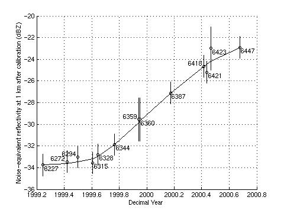

Chilbolton 94 GHz Galileo radar data
Robin Hogan
11 April
2002
Introduction
This dataset consists of effective radar reflectivity factor (Z)
measured by the 94 GHz Galileo cloud radar situated at Chilbolton,
England (51.1445°N, 1.4370°W). The instrument is a bistatic system that operates
continuously round the clock in a vertically-pointing configuration. It was
developed for the European Space Agency by Officine Galileo, the Rutherford
Appleton Laboratory and the University of Reading.
This document is a revision of the original documentation of 26 February
2001, and describes the recalibrated data that was released to BADC in spring
2002. If you have used the reflectivity values of the original Galileo
data for anything quantitative then you should definitely download the newer
data, as there was a steady and significant loss of sensitivity during the 18
month duration of this dataset, that we were previously unaware of.
The characteristics of the radar are as follows:
_________________________________________________
Frequency: 94.00 GHz
Antenna diameter: 0.6 m
Peak power: 1.6 kW
Pulse width: 0.5 µs
Pulse repetition frequency (PRF): 6250 Hz
System noise figure: 10 dB
Beamwidth: 0.5°
Range resolution: 60 m
_________________________________________________
History of operations
The radar was initially operated in summer 1996 for a few months, but a
problem with sensitivity was found. This was rectified when the radar was
Dopplerised, and from September 1999 until February 1999 the instrument was
operated from the `Receive Cabin' at Chilbolton. It was then mounted on the side
of the main 25 m antenna at Chilbolton to permit scanning with the 3-GHz radar,
although did not operate round-the-clock until the end of April 1999. On 17
October 2000 it was removed from the side of the main dish to solve the problem
of gaps in the data whenever the 25 m antenna was scanning through
precipitation. During this time the output power from the instrument dropped
steadily; the calibration section below discusses the implications of this for
sensitivity and calibration. Doppler velocities measured during this time were
unreliable and so have not been included in the dataset. The data described here
are from 1 May 1999 until 17 October 2000.
From January 2001 to March 2002 the radar was operated from the ground at
Chilbolton and a new data acquisition system installed which permitted
measurement of the mean Doppler velocity and Doppler spectral width. Operations
from the ground meant that the data stream was not interrupted every time the
3-GHz radar was scanning, but unfortunately it also meant that direct
cross-calibration with the 3-GHz radar was not possible. Nonetheless, it is
hoped that these data can be released on BADC in the future.
Processing that has been applied to the data
The following stages of processing have been applied to the raw data (in this
order):
- True linear averaging of the original 1-s data to 30 s.
- Rejection of rays recorded when the radar was pointing more than 5° from
zenith (i.e. when the 3-GHz CAMRa radar on to which the 94 GHz radar was
attached was scanning through precipitation).
- Rejection of `glitched' rays when the data acquisition system got out of
sync with the transmitter.
- Calculation of the noise level by looking at the assumed cloud-free gates
between 13 and 14.5 km. This is stored in the nez variable.
- Subtraction of the noise component from the measured echo power, and
thresholding of the resulting signal.
- Clean-up of speckle noise by rejecting cloudy pixels or pairs of cloudy
pixels with cloud-free pixels above and below them.
- Range correction of the data to account for the inverse square law and any
range offset.
- Application of calibration figure (to both Zh and nez).
- Spring 2002: Recalibration based on numerous calibration events
with the 3-GHz radar.
The result of this processing is that the minimum-detectable signal at a
range of 1 km was around -50 dBZ in May 1999, increasing to around -38
dBZ in October 2000. The sensitivity decreases with range according to
the inverse square law; therefore the minimum-detectable signal at 10 km is 100
times (20 dB) higher than at 1 km. The `chil2nc' program was used to
process the data and convert it to NetCDF; source code for the latest version
may be downloaded from http://www.met.rdg.ac.uk/radar/software.html.
Data format
The data is provided as daily NetCDF files containing
the following variables:
- frequency
- The frequency of the radar in GHz (94.00).
- latitude
- The latitude of Chilbolton in degrees north (51.1445).
- longitude
- The longitude of Chilbolton in degrees east (-1.4370).
- altitude
- The altitude of the radar antenna above mean sea level in metres (90 m
when the radar was on the side of the main CAMRa dish).
- time
- A vector containing the centred time of each ray of data, in decimal
hours UTC.
- range
- A vector containing the centred range from the antenna, in km, of each
range gate. Note that to get height above mean sea level you should add the
altitude to this value.
- nez
- A vector containing the `noise-equivalent radar reflectivity factor' at
1 km in dBZ (i.e. the level of the thermal and instrumental noise
normalised to a range of 1 km), after calibration. It is calculated for each
ray using the range-gates between 13 and 14.5 km which are assumed to be
cloud free. It increases through the dataset due to the steady loss of
instrument sensitivity, but can also vary on short timescales by as much as
2 dB when low clouds pass overhead because of the change in sky brightness
temperature at 94 GHz.
- Zh
- An array containing effective radar reflectivity factor, in dBZ.
A value of -999 dBZ indicates that no signal was detected. The
comments attribute contains the following string: Calibration
convention: in the absence of attenuation, a cloud at 273 K containing one
million 100-micron droplets per cubic metre will have a reflectivity of 0
dBZ at all frequencies. In addition to the usual sources of
attenuation at 94 GHz (liquid water clouds, water vapour, oxygen, melting
snow and rain), it has been found that when the radomes covering the
antennae of the radar become wet, they strongly attenuate the beam,
typically by more than 10 dB. Reflectivity values measured at all altitudes
during rain (and shortly afterwards) should therefore not be trusted.
The following global attributes are present:
- system
- A string identifying the instrument that took the data, in this case
`Galileo'.
- scantype
- A string identifying the type of scan that the radar was performing, in
this case `Fixed'.
- day
- The day of the month as a short (two-byte) integer.
- month
- The month as a short integer.
- year
- The year as a short integer.
- file
- The `tape' number of the original Chilbolton-format radar data file from
which the data in this NetCDF file was obtained, as a short integer. Where a
day of data spans more than one such file, the tape number of the first is
given.
- raster
- The number of the first raster of the first Chilbolton-format data file
that was used in producing this data, as a short integer. Chilbolton-format
radar files are divided into rasters which, in the case of cloud radar data,
are usually one hour long.
- options
- A string containing the command-line options that were used with the
chil2nc program to produce the data. This is useful to see what
processing has been done, such as the calibration figure that has been
applied in dB (the -Zcal switch).
- software_version
- The version of chil2nc that was used to produce the data. This
field was not implemented in versions of chil2nc earlier than
around 0.7.6.
The following global attributes were added when the data were recalibrated:
- history
- The record of programs that have operated on the data file since its
original generation.
- command_line
- The command line that was used to invoke the program used to perform the
recalibration.
- comments
- This attribute contains the following message: It has been found that
the transmitter of the Galileo radar has been losing power steadily since
around September 1999. Recalibration of the entire dataset from May 1999 to
October 2000 (the parameters Zh and nez) has been performed by comparing
with the 3 GHz radar at Chilbolton in 13 scanning events. The 3 GHz radar is
itself calibrated to better than 0.5 dB using the method of Goddard et al.
(1994, Electronics Letters 30, 166-167). The resulting Galileo calibration
is believed to be accurate to around 1.5 dB. It should be noted that this
loss of sensitivity means that the fraction of clouds not detected by the
radar will increase through the dataset.
Simple programs to read NetCDF files of Chilbolton data into Matlab, IDL and
PV-WAVE can be found at http://www.met.rdg.ac.uk/radar/software.html.
Interpretation of radar reflectivity factor and calibration issues
It is taken for granted that if quantitative use is to be made of the
Z values then the user has a fairly good understanding of the concept of
radar reflectivity and how it is related to the particle size distribution. In
this section therefore we concentrate on calibration issues, although the
problem of attenuation at 94 GHz is also discussed since it is much stronger
than at lower frequencies.
Our approach to calibration of the 94 GHz radar is by reference to the 3 GHz
`CAMRa' radar at Chilbolton. CAMRa can be calibrated absolutely by exploiting
the non-independence of the radar parameters Z, ZDR and
KDP in heavy rain, as described by Goddard et al. (1994).
However, to compare the two radars directly requires a Rayleigh-scattering
target which is both near enough for attenuation to be small at 94 GHz, yet far
enough that near-field and ground-clutter effects are small at 3 GHz. We correct
for gaseous attenuation at 94 GHz using the temperature and humidity from either
the ECMWF or Met Office models, and make the small correction for the near-field
effect at 3 GHz using the expression of Sekelsky (2001). The results are
expressed in the figure below in terms of the noise-equivalent reflectivity at 1
km (see the definition of nez above):
The
error bars indicate the 13 calibration events and their estimated uncertainty,
and the numbers indicate the Chilbolton tape number. A steady deterioration in
sensitivity is evident, which is due to a loss of transmit power from the tube.
Given the uncertainties in the intercomparison of the two radars, the error in
the resulting 94-GHz reflectivity factor after calibration is estimated to be
around ±1.5 dBZ.
It is important to understand the convention used in the intercalibration of
radars of different frequencies because of the temperature dependence of the
|K|2 parameter of liquid water at millimetre wavelengths. We
have calibrated our radars such that Rayleigh-scattering liquid water droplets
at 0°C produce the same reflectivity factor at all frequencies. For example, a
population of 100µm droplets with a concentration of 106
m-3 at 0°C would have a Z of 0 dBZ at all frequencies.
Hence a radar at frequency f (after calibration and correction for
attenuation) will report an effective reflectivity given by
Zf = Integral from D=0
to D=infinity {
(|Kf|2/|Kf,0|2)
n(D) D6 Mf(D)
dD },
where Mf is
the Mie/Rayleigh backscatter ratio. |Kf,0|2 is the
dielectric parameter of liquid water at 0°C, and is 0.93 at 3 GHz, 0.877 at 35
GHz and 0.668 at 94 GHz. Because the |Kf|2 of
liquid water varies with temperature at 94 GHz, if the example above were
repeated at 20°C, a 94 GHz radar using this calibration convention would report
a Z of +0.82 dBZ while a 3 GHz radar would still report 0
dBZ. Formulae for the dielectric constants of ice and liquid water can be
found in Liebe et al. (1989).
Attenuation by both atmospheric gases and liquid water is much stronger at 94
GHz than at lower frequencies. At 10°C, 1013 mb and 100% humidity, the one-way
attenuation due to gaseous attenuation at 94 GHz is 0.636 dB km-1. In
summer the typical two-way gaseous attenuation to top-of-atmosphere is 2 dB. If
the temperature and humidity profile is known with some degree of accuracy (such
as from a model or a radiosonde ascent) then gaseous attenuation can be
corrected for. However, when low clouds are present then the liquid water
attenuation can easily exceed the gaseous attenuation, and of course the profile
of cloud liquid water content is generally far more uncertain. This makes
quantitative use of the reflectivity data in ice difficult if there is any low
cloud present. At 10°C and 1013 mb, the one-way attenuation of 1 g
m-3 of liquid water is 4.34 dB km-1. Attenuation by
rainfall is even greater, and in moderate and heavy rain can extinguish the
signal completely. Wetting of the radomes of the radar also introduces a large
attenuation; see point 4 in the next section.
Known problems with the data
- Gaps in the data are present due to:
- The CAMRa radar (to which Galileo was attached from February 1999
to October 2000) scanning through precipitation. Cloud data were not
recorded whenever the pointing angle was more than 5° from zenith.
- Glitches in the data caused by the data acquisition system losing sync
with the transmiter. These events were easy to detect and reject.
- A 50 kHz interference was present in the raw data which, if unchecked,
resulted in anomalous horizontal `lines' of cloud every 3 km in processed
time-height plots of reflectivity. This problem has been tackled in the
following ways:
- Characterising the shape of the oscillation in the cloud-free gates at
the top of each ray, and then using this knowledge when subtracting the
noise from the remainder of the ray.
- Removing isolated cloudy pixels or pairs of pixels from the processed
ray.
- Manual removal of any remaining erroneous echos.
Removing this
interference has unavoidably compromised the sensitivity to some extent. Also,
some anomalous echos may still be present in some of the data, although they
are fairly easy to locate subjectively. The removal of pairs of pixels
(indicated by the options attribute containing the string
`-doubleclean') obviously will remove any genuine cloud that is only
two range gates thick.
- The reflectivity values in the lowest gates are affected by:
- Ground clutter and leakage of the transmit pulse into the receiver: this
appears as a fairly constant return (in time) in the lowest 6 to 8 gates
that falls off rapidly with range.
- The near field effect: this appears as decrease in the Z of rain
in the lowest 2 or 3 gates. The far-field approximation is generally
applicable beyond 2×antenna diameter2/wavelength,
which for the Galileo radar is 225 m. A slight error in the range
calibration could also have contributed to the apparent reduction of
Z in the closest few gates.
- Insects: although the problem is much less at 94 GHz than 35 GHz (due to
the fact that insects are usually Mie scatterers), on some hot summer days
insects are apparent between dawn and dusk as fairly low Z values up
to 3 km. They can be distinguished from cloud using data from the Chilbolton
lidar ceilometer.
- Wetting of the radomes covering the two antennas of the radar has been
found to cause a two-way attenuation of 9-14 dB. The data should therefore not
be used quantitatively during rain events, which can be identified using the
Chilbolton rain-gauge data also provided by BADC. Other radars at 94 GHz
presumably also suffer from this problem.
Conditions of use
If data from the Galileo radar is used in any
publication or report then acknowledgement must be given to RCRU at the
Rutherford Appleton Laboratory for providing the data. The acknowledgement
should be of the form:
We thank the Radiocommunications Research Unit at the Rutherford
Appleton Laboratory for providing the 94 GHz Galileo radar data. The Galileo
radar was developed for the European Space Agency by Officine Galileo, the
Rutherford Appleton Laboratory and the University of Reading, under ESTEC
Contract No. 10568/NL/NB.
Who to contact
If you have any problems obtaining the data, please
contact the British Atmospheric Data Centre. If you have problems, queries or
comments regarding the data themselves that are not covered adequately by this
document, or would like to know if any data was recorded on specific dates
outside the period available on BADC, please contact Charles Kilburn (C.Kilburn@rl.ac.uk) and Robin Hogan (r.j.hogan@reading.ac.uk). Even if you
use the data and have no difficulties at all, we are very interested in knowing
the uses to which our cloud radar data is being put, so please contact us!
See also
References
- Goddard, J. W. F., J. Tan and M. Thurai, 1994: Technique for calibration
of meteorological radars using differential phase. Electronics Letters,
30, 166-167.
- Liebe, H. J., T. Manabe and G. A. Hufford, 1989: Millimeter-wave
attenuation and delay rates due to fog/cloud conditions. IEEE AP,
37, 1617-1623.
- Sekelsky, S. M., 2001: Near-field corrections for meteorological radars.
Proc. 30th AMS Conference on Radar Meteorology, Munich, Germany, 32-34.